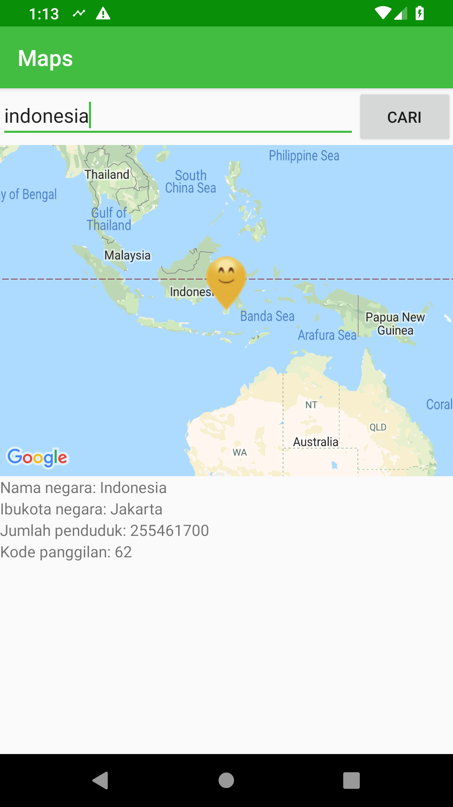

To run this sample project, you need to register to https://rapidapi.com and put the api key in the project. You also need to put the google map API key in the project.

You are asked to improve the page by the following tasks.
-
When the user search a country in the EditText, the map show the pin point in the map. Then display the native name, the capital city name, the population number, and the calling code in the given TextViews